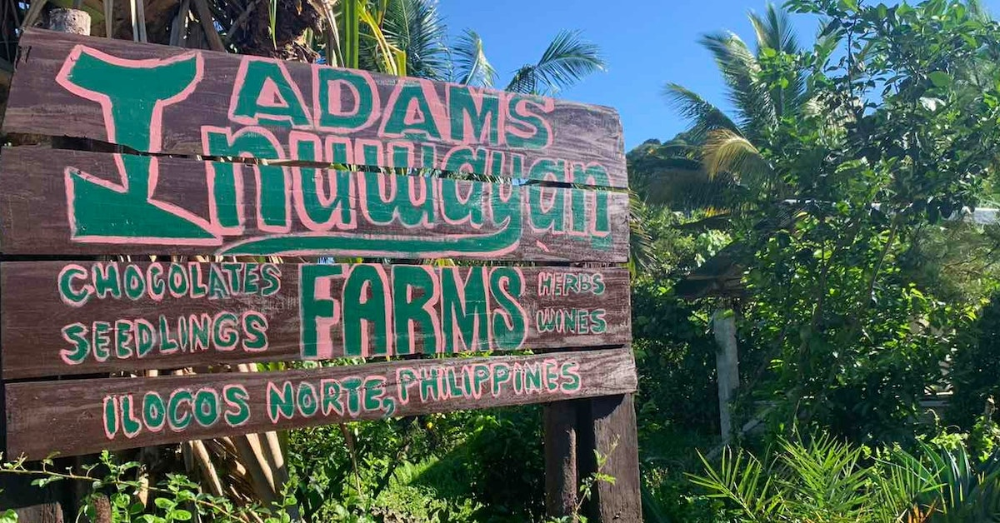
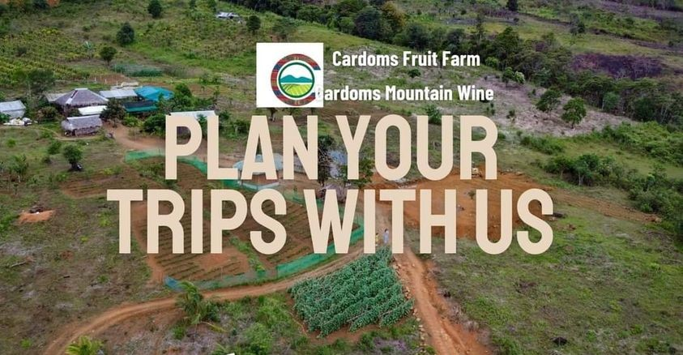
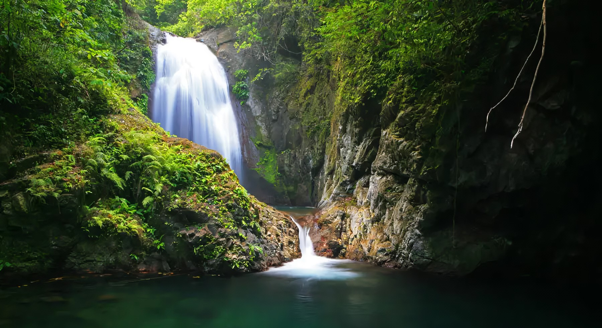

|  |
Inuwayan Farm ProductionsThe products that they offer here are homegrown and processed locally such as fruit wines, chocolates, juice concentrates, seedlings, herbs and much more. They also have Rambutan Fruit picking every August - Septmeber every year. |
|  |
Cardoms Fruit FarmLift your mood with our mouth-watering Chicken Tandori and Fresh Salad. You can also do fruit pickings on the farm. |
|  |
Anuplig FallsThe premier water falls of Adams, Ilocos Norte. It is about 12 meters high with two basins which are really ideal for swimming. You can climb the top of the falls through the rock formation on the side. The falls is also a much-photographed subject, setting a natural view of the tranquil environment. |

|
Mt. PalemlemMount Pico de Loro towers above all the other mountains in the town of Adams, a little-known treasure of a place tucked away in northeastern Ilocos Norte. Like a sentinel watching over the charming, quaint and picturesque little town, the mountain, known to the townspeople as Mt. Palemlem, soars to 1,294 meters above sea level. |